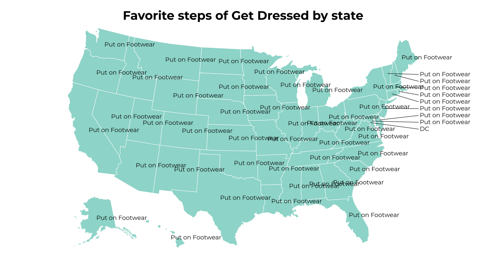

-
Current ratings of the states
-
Which things used for Poor People does your state hate the most?
-
Favorite steps of Get Dressed by state
-
Favorite first steps of Fall by state
-
Which Musicians from Tokyo does your state love the most?
-
Which properties of Insurance does your state hate the most?
-
Favorite part of Ice Hockey by state
-
 Which first steps of Pay Bills does your state hate the most?
Which first steps of Pay Bills does your state hate the most? -
Which aspects of Darts does your state love the most?